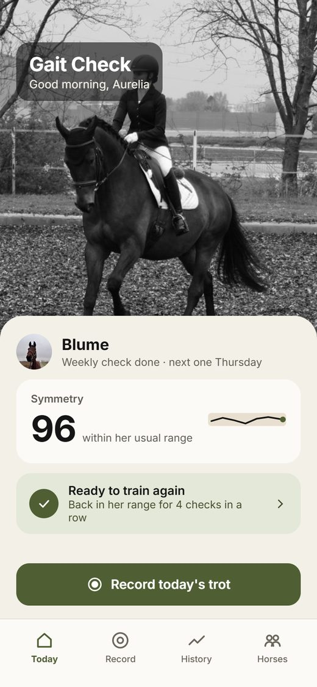
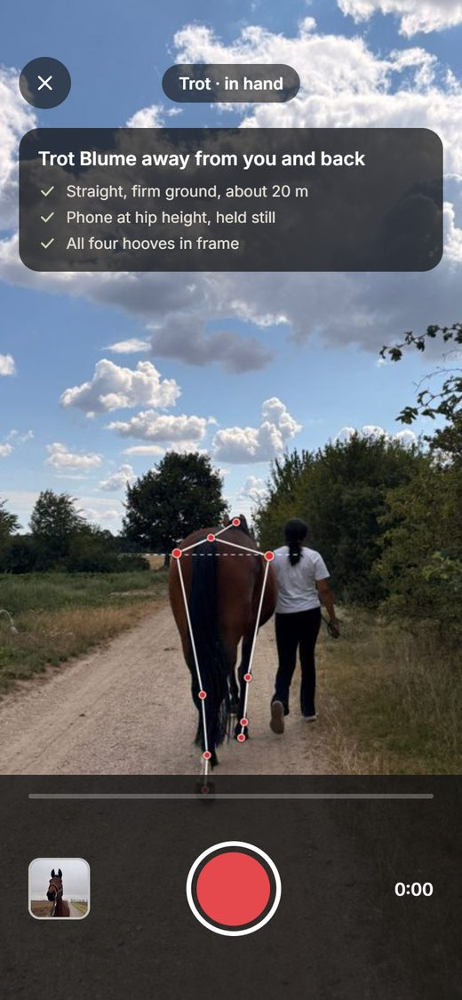
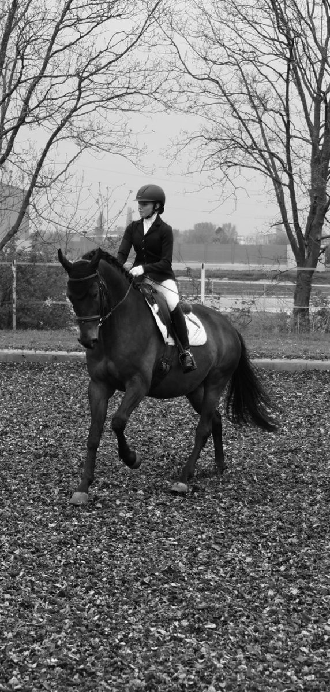
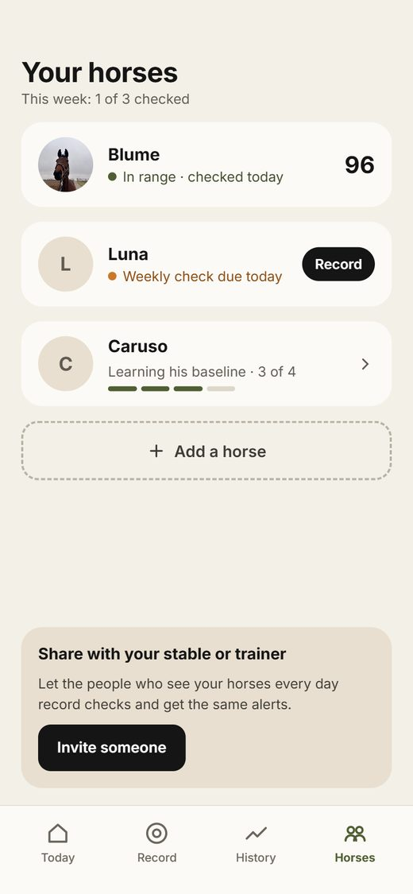
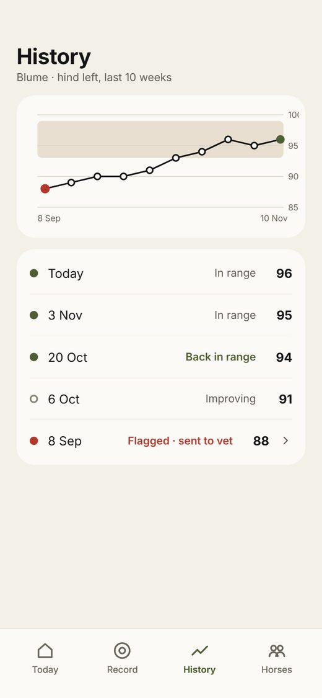

Noticed too late
Mild lameness is missed even by experienced owners. If you see your horse every day, you get used to gradual changes.
Film a 30-second trot once a week. Gait Check learns how your horse normally moves and tells you when a leg starts moving differently – before anyone can see it.

This is the real demo – tap around.
When your knee starts to ache, you notice and rest it before it gets bad. Horses are prey animals – they hide pain by instinct. Lameness often starts as a few millimetres of difference between steps. By the time it is visible, a short break has turned into months off.
Mild lameness is missed even by experienced owners. If you see your horse every day, you get used to gradual changes.
During rehab, owners decide by gut feeling whether a horse "looks okay". Building up too early means a relapse – especially with tendons.
A lameness exam is one trot-up on one day. The vet doesn't know what normal looks like for this particular horse.

Blume has a tendon injury in her left hind leg and has been lame for more than a year. Her story shows the whole problem.
“I can't prevent horses from going lame. No one can. But with Gait Check, you can catch it earlier, act earlier and shorten the time off.”Aurelia, founder, rider for 13 years
Three steps, once a week. Everything else happens in the app.

Trot your horse in hand, away from you and back, on straight firm ground. Just like the trot-up at the vet.

The AI tracks hooves, joints and hips, compares left and right steps, and learns your horse's personal movement range for each leg.

If a leg moves outside its usual range, you know right away. Film again the next day, or send the history to your vet.
Every horse has a stiff side and a hollow side. Comparing horses with a textbook ideal would raise false alarms all the time. Gait Check compares each horse only with itself: the first four checks set its normal range, and every check after that is measured against it.
That makes small, gradual changes visible – the ones that build up over weeks and that the eye gets used to.
See the baseline in the demo →Vets grade lameness on a scale – the most widely used one runs from 0 to 5. Obvious lameness doesn't need an app. Gait Check is built for grades 1 and 2: the stage where it is hard to see, not always there, and still early enough for a short break instead of months off.

The hardest question after lameness isn't "what's wrong?" – it's "when can we train again?". Gait Check shows when your horse has been back in its own range for several checks in a row, on all four legs.
Agree the training plan with your vet. Gait Check shows whether the movement stays in range.
Owners usually report from memory. With Gait Check they send a secure link: symmetry per leg for every check, the trot videos with tracking points, and their training notes. It opens in any browser – no app, no account.


Early warnings, and confidence instead of guesswork during rehab.

Keep an eye on many horses at once and get the same alerts as the owner.

A movement history for every patient instead of a single snapshot.
No. Gait Check flags when your horse moves differently from its own normal. It does not say why. Diagnosis and treatment stay with your vet – Gait Check gives them better data to work with.
Your phone and about 20 metres of straight, firm ground. Someone trots the horse in hand away from you and back while you film from hip height. No sensors, no extra equipment.
Trot is a two-beat gait where diagonal legs move together, so it has the most even rhythm. Asymmetries show up best there, which is why every lameness exam uses the trot.
Gait Check first learns your horse's normal range from four weekly checks. You see every result from the start; alerts begin once the range is ready. That's also why it's worth starting while your horse is sound.
A horse that hurts on both sides can look symmetrical again – just shorter-strided and stiffer. Because Gait Check compares every check with the horse's own history, it is designed to notice a change in overall movement too – not only differences between left and right.
Gait Check is in development. You can try the full experience today in the interactive demo. In the demo the movement analysis is simulated.
Works best on your phone – add it to your home screen.